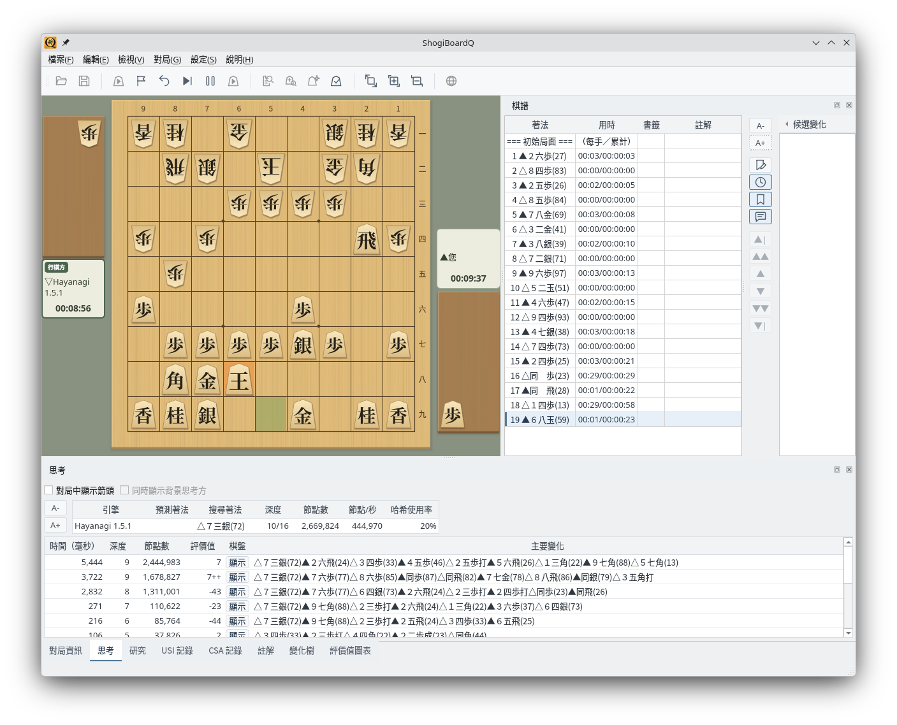

macOS
在 macOS 環境中原生執行
1
macOS 版的畫面
ShogiBoardQ 在 macOS 上執行的樣子。

macOS 版：macOS 環境中的對局畫面（日文介面）
以同一套 Qt6 原始碼支援 Linux、macOS 和 Windows
Linux 的截圖於 Linux 上以繁體中文介面擷取。macOS 和 Windows 的截圖為日文介面。
在 Linux 環境中原生執行
ShogiBoardQ 在 Linux 上執行的樣子。可以在 KDE Plasma、GNOME 等主流桌面環境中使用。截圖是在 KDE Plasma 上與將棋引擎 Hayanagi 對局的畫面。

Linux 版：KDE Plasma 環境中的對局畫面（Hayanagi 正在思考）
在 GitHub Releases 發行的 ShogiBoardQ-linux.zip 中收錄了 AppImage、詰棋題集（3〜13 手詰，共 6,000 題）和將棋引擎 Hayanagi。解壓縮 ZIP 後即可選擇題集和 Hayanagi。適用於 x86_64 的 Linux。
從原始碼建置以及製作發行套件的步驟，請參閱Linux 建置與發行。
在 macOS 環境中原生執行
ShogiBoardQ 在 macOS 上執行的樣子。
macOS 版：macOS 環境中的對局畫面（日文介面）
在 Windows 環境中原生執行
ShogiBoardQ 在 Windows 上執行的樣子。

Windows 版：Windows 環境中的對局畫面（日文介面）
Qt6 框架讓 ShogiBoardQ 支援多種作業系統
ShogiBoardQ 以 Qt6 和 C++17 開發。透過 Qt6 的跨平台功能，可以用同一套原始碼建置 Linux、macOS 和 Windows 版的應用程式。
ShogiBoardQ 使用 Qt6 的 Fusion 元件樣式，在各平台上提供一致的介面。